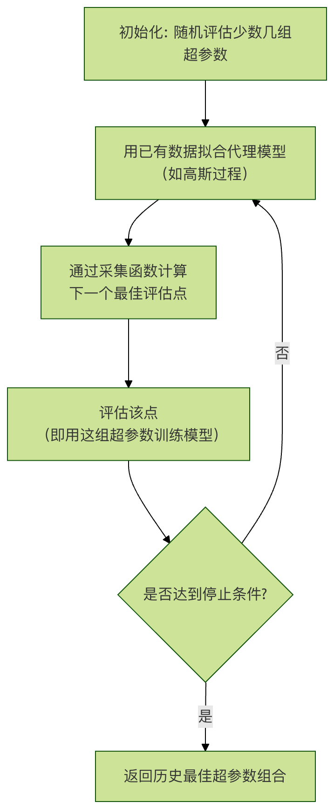

Hyperparameter Search
In machine learning practice, we often encounter this confusion: why can other people's models achieve 95% accuracy with the same algorithm, while mine only reaches 85%? Besides differences in data quality and feature engineering, a key factor often lies inhyperparameterssettings.
If the model algorithm is the engine of a car, then hyperparameters are the fine-tuning knobs such as ignition timing and fuel injection amount. Tuned well, the engine delivers surging power; tuned poorly, it may lack power or suffer severe wear.
This article will systematically introduce you to hyperparameter search, a crucial part of model optimization and engineering.
What are hyperparameters?
Before diving into search methods, we must first clarify a core concept:hyperparametersandmodel parametersthe difference between them.
Model parameters vs. hyperparameters
| Property | Model parameters | Hyperparameters |
|---|---|---|
| Definition | The internal variables that the modellearnsfrom the training data. | Before model trainingbegins,configuration variables manually set by the developer or selected through algorithms. |
| Learning method | Automatically adjusted via optimization algorithms (e.g., gradient descent). | Not learned from training data; requires external setting. |
| Example | Weights in linear regressionwand biasesb; weights and biases in neural networks. |
Learning rate, maximum depth of decision trees, number of trees in a random forest, and K value in KNN. |
| Impact | Determines the model's ability to fit specific data. | Determines the model'slearning process, capacity, and structure,thereby affecting final performance. |
A vivid analogy: Imagine you are learning to cook a new dish (training a model).
- Model parametersare like the specific amounts of "a pinch of salt, half a spoon of sugar" that you figure out during the cooking process based on the ingredients and heat. This amount is derived through practice (training).
- Hyperparametersare decided before you start cooking: whether to usehigh-heat stir-fryingorlow-heat slow simmering(learning rate)? How many times in total should youstir-fry(number of training epochs)? These choices fundamentally affect your cooking process and the final taste.
Examples of common hyperparameters
Different machine learning algorithms have their unique hyperparameters:
General hyperparameters：
learning_rate: Learning rate, controls the step size of model parameter updates. If too large, it may "skip" the optimal point; if too small, learning will be too slow.n_estimators: Number of weak learners (e.g., trees) in ensemble models.max_iter/epochs: Maximum number of iterations or training epochs.
Linear models / neural networks：
alpha/lambda: Strength of the regularization term, used to prevent overfitting.batch_size: Number of samples used per parameter update.hidden_layer_sizes: Hidden layer size of neural networks.
Tree models：
max_depth: Maximum depth of the tree, controls model complexity.min_samples_split: Minimum number of samples required to split an internal node.min_samples_leaf: Minimum number of samples required at a leaf node.
Why is hyperparameter search needed?
Since hyperparameters are so important, can we just set them arbitrarily based on experience or intuition? The answer is no. The reasons are as follows:
- Huge impact on performance: For the same model, different hyperparameter combinations can lead to vastly different performance (e.g., accuracy, F1 score).
- No universal optimal values: Optimal hyperparameters are highly dependent on the specific dataset, task, and model; there is no one-size-fits-all "magic default parameter."
- Huge combination space: Multiple hyperparameters interact with each other, forming a high-dimensional search space. Manual trial and error is extremely inefficient and can easily get stuck in local thinking.
Therefore, we need systematic, automated methods to explore this vast parameter space and find configurations with better performance. This process ishyperparameter searchorhyperparameter optimization.。
Its core goal is to find, within an acceptable computational cost, a set of hyperparameters that makes the model perform optimally onunseen data(validation set) in terms of performance metrics.

Mainstream hyperparameter search strategies
1. Grid Search
Grid search is the most basic and intuitive search method.
How it works：
- Define a list of candidate values for each hyperparameter to be searched.
- The search algorithm generates theCartesian productof these lists, i.e., all possible combinations.
- Iterate through every combination, train the model, and evaluate.
- Select the combination with the best performance on the validation set.
Example: Search two hyperparameters of a support vector machine (SVM).
Example
param_grid = {
'C': [0.1, 1, 10, 100], # Regularization strength, 4 candidate values
'gamma': [0.001, 0.01, 0.1, 1] # Kernel coefficient, 4 candidate values
}
# Grid search will try 4 * 4 = 16 different combinations
Advantages：
- Simple and reliable: As long as the grid is fine enough, it is guaranteed to find the optimal solution within the given range.
- Easy to parallelize: The training and evaluation of each parameter combination are independent of each other, making it very suitable for parallel computing.
Disadvantages：
- Curse of dimensionality: If the number of hyperparameters increases slightly or candidate values become denser, the number of combinations grows exponentially, making the computational cost unbearable. For example, with 5 parameters, each taking 10 values, you would need to train and evaluate 10^5 = 100,000 models!
- Low efficiency: It may waste a lot of computational resources on "unimportant" parameters.
2. Random Search
Random search is an effective improvement over the shortcomings of grid search.
How it works：
- Define aprobability distribution(e.g., uniform distribution, log-uniform distribution) for each hyperparameter.
- Within the specified total number of trials (
n_iter),randomly samplea set of hyperparameter values. - Train and evaluate each sampled set of parameters.
- Select the combination with the best performance.
Example: Use random search to optimize a random forest.
Example
from scipy.stats import randint, uniform
param_dist = {
'n_estimators': randint(100, 500), # Integer uniform distribution, 100 to 500
'max_depth': randint(5, 30), # Integer uniform distribution, 5 to 30
'min_samples_split': uniform(0.01, 0.2) # Continuous uniform distribution, 0.01 to 0.21
}
# Randomly perform 50 trials
random_search = RandomizedSearchCV(estimator=rf_model,
param_distributions=param_dist,
n_iter=50,
cv=5,
verbose=2)
random_search.fit(X_train, y_train)
Why is random search more efficient?Research (Bergstra & Bengio, 2012) shows that for most problems, model performance is usually sensitive to only a few hyperparameters. Random search allows us toexplore every dimensionmore times, thus having a higher probability of finding the best region for important parameters, rather than being constrained by the fixed grid of unimportant parameters like grid search.
Advantages：
- High computational efficiency: With the same computational budget, it has a higher probability of finding a better solution than grid search.
- Flexible: You can easily specify probability distributions for parameters (e.g., searching learning rate on a logarithmic scale).
Disadvantages：
- Randomness: Results may vary with the random seed and may miss certain regions.
- No memory: Each trial is independent and does not use information from previous trials to guide subsequent searches.
3. Bayesian Optimization
Bayesian optimization is a smarter search method suitable for optimizing functions with very high evaluation costs (e.g., training a large deep learning model may take days).
Core idea：
- Surrogate model: Use a computationally inexpensive probabilistic model (e.g., Gaussian process) to "simulate" the real, computationally expensive objective function (i.e., the relationship between model performance and hyperparameters).
- Acquisition function: Based on the uncertainty of the surrogate model, select the "most promising" hyperparameter combination for the next evaluation. It balancesexploration(sampling in regions with high uncertainty) andexploitation(sampling near regions known to perform well).
Workflow：

Advantages：
- Extremely efficient: Can find a near-optimal solution with the fewest trials, especially suitable for expensive models.
- Adaptivity: Uses historical information to intelligently guide the search direction.
Disadvantages：
- Complex implementation: More complex than the previous two.
- Difficult to parallelize: Standard Bayesian optimization is sequential and difficult to parallelize directly (although improved methods exist).
- High-dimensional spaces: As the dimensionality of hyperparameters increases, fitting and optimizing the surrogate model becomes harder.
Common tools： scikit-optimize, BayesianOptimization, Optuna, Hyperopt。
Engineering practices and considerations
1. Validation strategy: don't pollute your test set!
When searching hyperparameters,neveruse the test set to guide the search process; otherwise, it will lead to information leakage and overly optimistic generalization performance estimates.
Correct approach：
- Split the data into:Training set、Validation set、Test set。
- Hyperparameter search is performed on the "training set + validation set" (e.g., using cross-validation).
- After selecting the best hyperparameters, use this set of parameters toretrain the final model on the full training set(or the combined training + validation set).
- Finally, use thetest setthat has never participated in any training or tuning process to fairly evaluate the final model's generalization ability.
2. Use cross-validation
In order to evaluate hyperparameter performance more robustly and avoid contingency due to a single data split, cross-validation should be used.
Example
# Use 5-fold cross-validation for grid search
grid_search = GridSearchCV(estimator=model,
param_grid=param_grid,
cv=5, # 5-fold cross-validation
scoring='accuracy',
return_train_score=True)
grid_search.fit(X_train_val, y_train_val) # Here use training + validation data
print(f"Best parameters: {grid_search.best_params_}")
print(f"Best cross-validation score: {grid_search.best_score_:.4f}")
# Get best model (already refit on all data with best parameters)
best_model = grid_search.best_estimator_
3. Design tips for the hyperparameter space
- Scale-sensitive parameters: For parameters such as learning rate and regularization strength, theireffective range often spans multiple orders of magnitude. They should be searched on a logarithmic scale (e.g.,
[0.001, 0.01, 0.1, 1]), not a linear scale (e.g.,[0.1, 0.2, ..., 1.0]）。 - Coarse-to-fine: You can first perform a large-scale random search or a sparse grid search to locate regions with better performance, then conduct a finer search in those regions.
- Use prior knowledge: Set reasonable initial ranges and distributions based on algorithm principles and empirical literature.
4. Automation and toolchains
In real-world engineering, hyperparameter search is often integrated into the MLOps pipeline.
- Frameworks：
Scikit-learnprovideGridSearchCVandRandomizedSearchCV。 - advanced libraries：
Optuna,Ray Tune,Keras Tuneretc. provide more powerful, distributed-friendly search capabilities, and support advanced features such as early stopping and pruning. - Cloud services: Platforms such as AWS SageMaker and Google Vertex AI provide managed hyperparameter optimization services.
Hands-on practice
Now, let's useScikit-learnandRandom Forestthe dataset to complete a full hyperparameter search exercise.
Task: Use the wine dataset to optimize a random forest classifier via random search.
Example
import numpy as np
from sklearn.datasets import load_wine
from sklearn.ensemble import RandomForestClassifier
from sklearn.model_selection import train_test_split, RandomizedSearchCV
from sklearn.metrics import classification_report
from scipy.stats import randint
# 2. Load data and split
data = load_wine()
X, y = data.data, data.target
X_train, X_test, y_train, y_test = train_test_split(X, y, test_size=0.2, random_state=42)
X_train_val, X_val, y_train_val, y_val = train_test_split(X_train, y_train, test_size=0.25, random_state=42) # 0.25 * 0.8 = 0.2
# 3. Define model and parameter distributions
rf = RandomForestClassifier(random_state=42)
param_dist = {
'n_estimators': randint(50, 300), # Number of trees
'max_depth': randint(3, 20), # Maximum depth of trees
'min_samples_split': randint(2, 10), # Minimum number of samples required to split an internal node
'min_samples_leaf': randint(1, 5), # Minimum number of samples in a leaf node
'max_features': ['sqrt', 'log2'] # Number of features to consider when looking for the best split
}
# 4. Perform random search (with 3-fold cross-validation)
random_search = RandomizedSearchCV(estimator=rf,
param_distributions=param_dist,
n_iter=30, # Randomly try 30 parameter combinations
cv=3, # 3-fold cross-validation
scoring='accuracy',
random_state=42,
verbose=1,
n_jobs=-1) # Use all CPU cores for parallelization
random_search.fit(X_train_val, y_train_val)
# 5. Output search results
print("="*50)
print("Best parameters from random search:")
print(random_search.best_params_)
print(f"\n"Best cross-validation accuracy: {random_search.best_score_:.4f}")
# 6. Evaluate the best model on the independent validation set
best_model = random_search.best_estimator_
y_val_pred = best_model.predict(X_val)
print("\nPerformance report on the validation set:)
print(classification_report(y_val, y_val_pred, target_names=data.target_names))
# 7. (Final step) Retrain with the best parameters on the entire training set, and evaluate on the test set
final_model = RandomForestClassifier(**random_search.best_params_, random_state=42)
final_model.fit(X_train, y_train) # Use all training data
y_test_pred = final_model.predict(X_test)
print("="*50)
print("Performance report of the final model on the test set (completely new data):")
print(classification_report(y_test, y_test_pred, target_names=data.target_names))
Output:
Fitting 3 folds for each of 30 candidates, totalling 90 fits
==================================================
随机搜索最佳参数：
{'max_depth': 9, 'max_features': 'log2', 'min_samples_leaf': 1, 'min_samples_split': 8, 'n_estimators': 156}
最佳交叉验证准确率：0.9812
在验证集上的性能报告：
precision recall f1-score support
class_0 1.00 1.00 1.00 11
class_1 1.00 0.94 0.97 16
class_2 0.90 1.00 0.95 9
accuracy 0.97 36
macro avg 0.97 0.98 0.97 36
weighted avg 0.98 0.97 0.97 36
==================================================
最终模型在测试集（全新数据）上的性能报告：
precision recall f1-score support
class_0 1.00 1.00 1.00 14
class_1 1.00 1.00 1.00 14
class_2 1.00 1.00 1.00 8
accuracy 1.00 36
macro avg 1.00 1.00 1.00 36
weighted avg 1.00 1.00 1.00 36 Other extensions